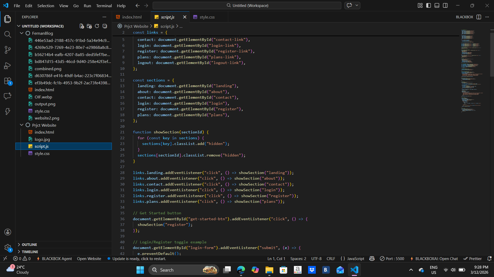

In my first year, I was introduced to basic programming. At first, coding was very confusing. I had a hard time understanding errors in my program. Sometimes I felt frustrated because even a small mistake, like a missing semicolon, could stop my whole code from running. But slowly, I learned how to read errors and fix them. I realized that programming is like solving a puzzle. It needs patience, focus, and practice. The feeling of seeing my program run successfully and also impressed ma’am Vera, made me proud and motivated me to learn more.